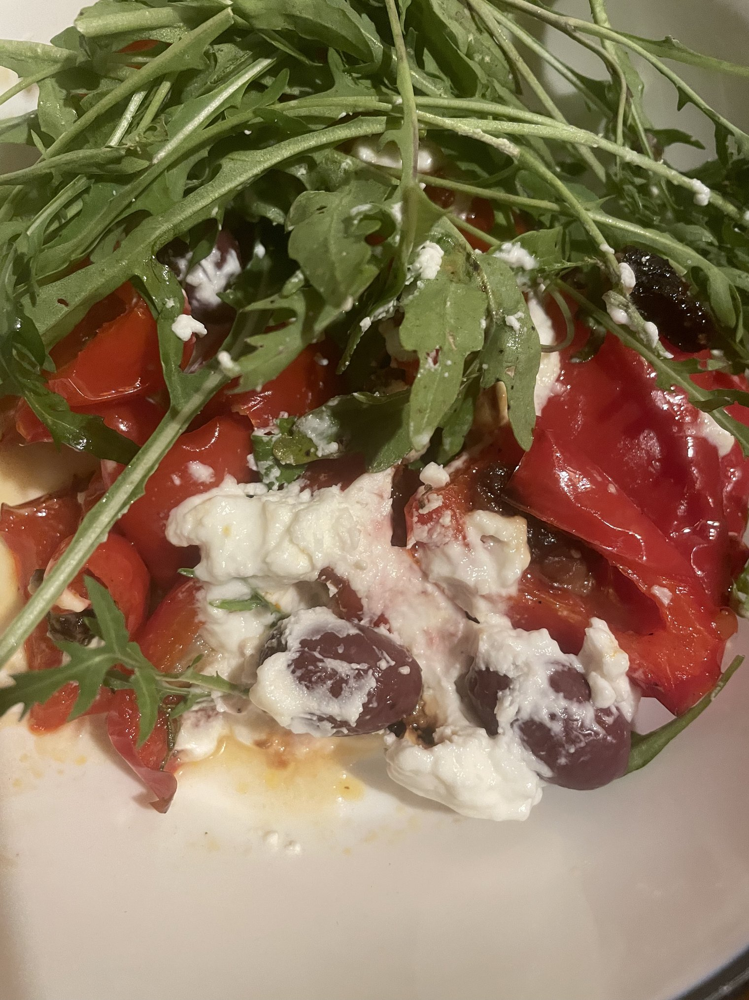

Pimientos al horno con pasas, olivas negras, queso de cabra y rúcula
Ingredientes
2×
- 3 pimientos rojos
- aceite de oliva
- sal
- un puñado de pasas
- un puñado de olivas negras
- 1 cdta de mostaza
- 1 cdta de miel
- 1 cda de vinagre
- 3 cdas de aceite de oliva
- 100 g de queso de cabra de untar
- un puñado de rúcula

Preparación
Paso 1
Cortar 3 pimientos rojos en tiras, aliñar con aceite de oliva y sal y hornear a 200ºC.
Paso 2
A media cocción (unos 20min), añadir un puñado de pasas y un puñado de olivas negras, y hornear 20min más.
Paso 3
Preparar la vinagreta con 1 cdta de mostaza, 1 cdta de miel, 1 cda de vinagre y 3 cdas de aceite de oliva.
Paso 4
Al final, añadir 100 g de queso de cabra de untar (uno bueno) y un puñado de rúcula, y aliñar con la vinagreta.
Resumen
3 pimientos rojos
aceite de oliva
sal
Cortar hornear 200ºC
un puñado de pasas
un puñado de olivas negras
hornear
1 cdta de mostaza
1 cdta de miel
1 cda de vinagre
3 cdas de aceite de oliva
Preparar
100 g de queso de cabra de untar
un puñado de rúcula
aliñar